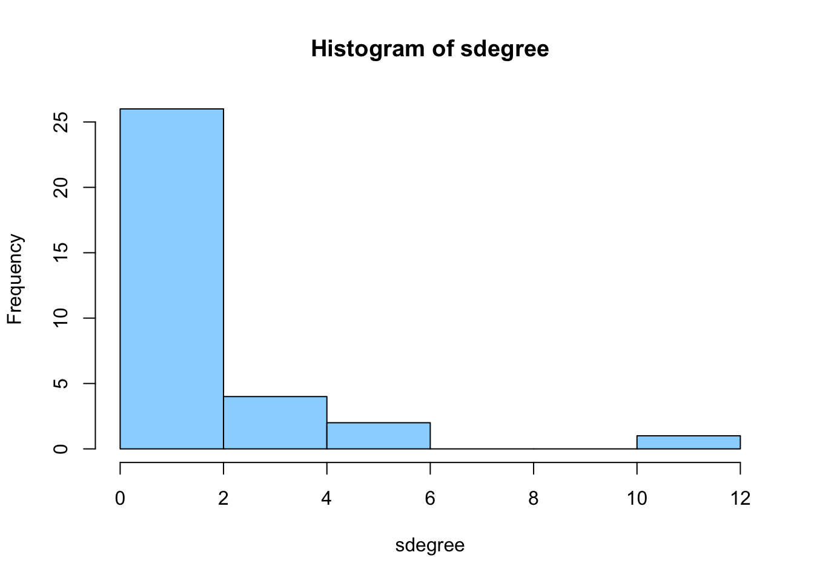
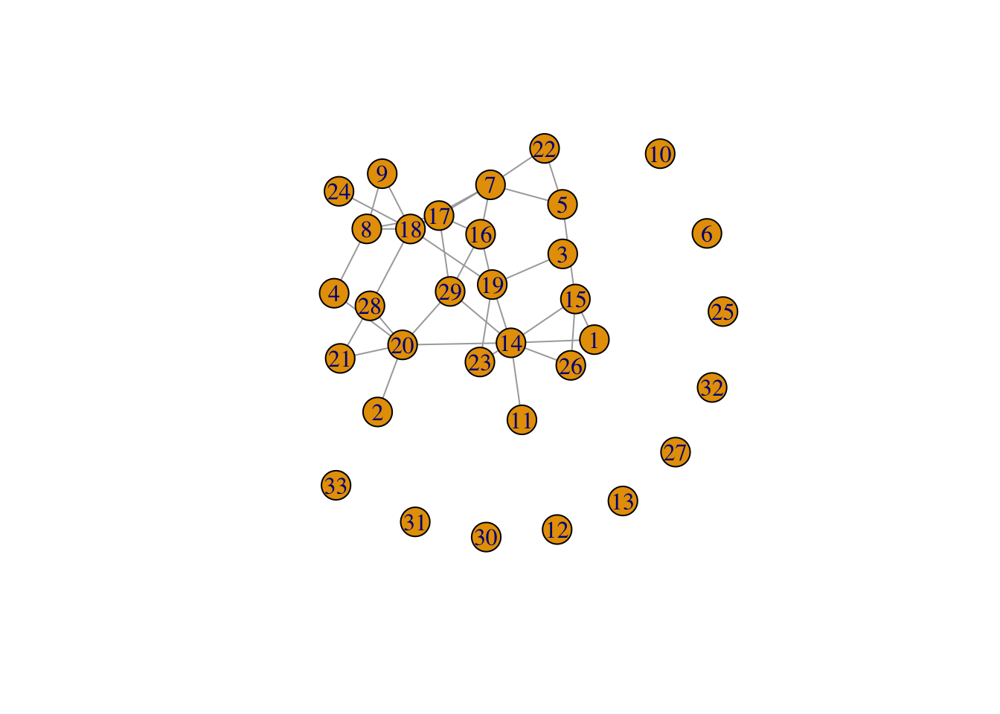
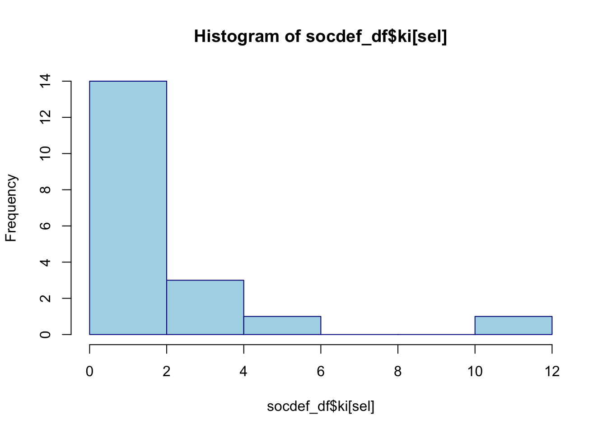
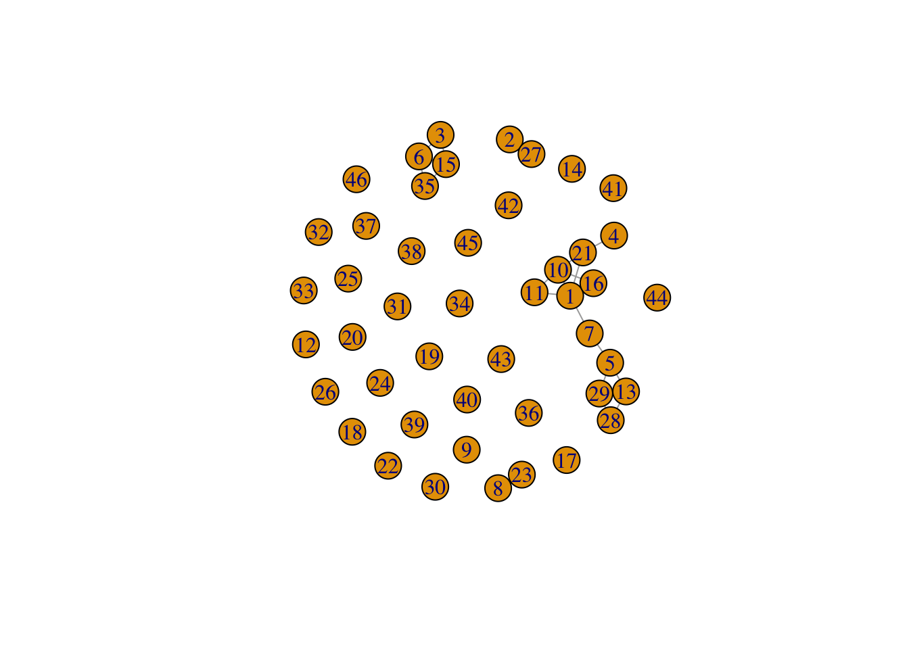
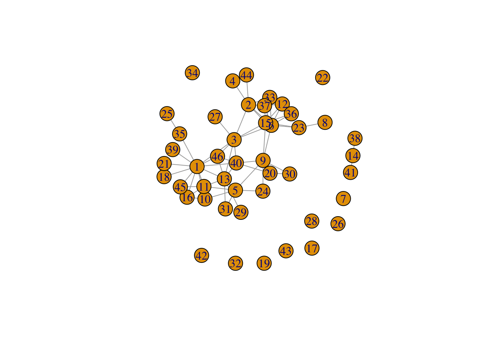

#start with clean workspace
rm(list=ls())
getwd()
#> [1] "/Users/anuschka/Documents/labjournal"
packages
Data
snet1 <- soc_net_array[ ,, 1]
snet2 <- soc_net_array[ ,, 2]
snet3 <- soc_net_array[ ,, 3]
diag(snet1) <- 0
diag(snet2) <- 0
diag(snet3) <- 0
Descriptives of
sociology network 2016-2017
snet1_g <- igraph::graph_from_adjacency_matrix(snet1, mode = c("undirected"))
plot(snet1_g)

In the plot above we see that there are quite a lot of copublications
within the network of Sociology, but also that about half of the staff
did not publish with others of the department yet. These are probably
the younger staff that did not work (or just started working) at the
department yet and thus did not copublish. We can also see that node 14
is the most “productive” in the sense of copublishing with the other
staff. This could be an older staff member who had more opportunities to
publish with many individuals of the staff.
sdegree <- igraph::degree(snet1_g)
hist(sdegree)
igraph::dyad.census(snet1_g)
#> $mut
#> [1] 26
#>
#> $asym
#> [1] 0
#>
#> $null
#> [1] 502
igraph::triad.census(snet1_g)
#> [1] 4750 0 616 0 0 0 0 0 0 0 80 0 0 0 0 10
igraph::edge_density(snet1_g)
#> [1] 0.04924242
In the histogram above we see that the degree of the network at that
moment was right-skewed. This means that most people in the network
don’t have very many individuals they copublished with (and because it
is an undirected network, this applies vice versa for the other person
connected with the tie)
We see that there are 26 dyads in the network. The edge density is
0.049, which means that the number of edges existing in the network is
relatively low as part of the maximum number there could possibly
be.
Descriptives of the
sociology network 2018-2019
snet2_g <- igraph::graph_from_adjacency_matrix(snet2, mode = c("undirected"))
plot(snet2_g)
The plot from the following 2 years is actually quite similar to the one
above. Again about half of the staff did not copublish yet. Node 14
still seems to have the most copublication ties, although node 7 has now
also become more central in the network.
sdegree2 <- igraph::degree(snet2_g)
hist(sdegree2)
igraph::dyad.census(snet2_g)
#> $mut
#> [1] 27
#>
#> $asym
#> [1] 0
#>
#> $null
#> [1] 501
igraph::triad.census(snet2_g)
#> [1] 4715 0 656 0 0 0 0 0 0 0 74 0 0 0 0 11
igraph::edge_density(snet2_g)
#> [1] 0.05113636
We also still observe a right-skewed distribution of the degrees, but
now we can see that there are a little more staff members in the tail of
the distribution, meaning that there are a few staff members that have
quite a lot of copublication ties. Regarding the dyad census we can see
that the network now has one dyad more than before (27). Also, the edge
density has increased a little bit, as the number is now 0.051.
Descriptives of the
sociology network 2020-2022
snet3_g <- igraph::graph_from_adjacency_matrix(snet3, mode = c("undirected"))
plot(snet3_g)

In the most recent plot of the network (2020 up until now), we can see
that there has been an increase in copublications. Now “only” 10 members
still don’t have a copublication with the other members of the staff.
Furthermore, we see an increasing number of staff members (not only node
14 and 7) that have several copublications. This would mean that the
degree distribution has also become less skewed.
sdegree3 <- igraph::degree(snet3_g)
hist(sdegree3)

igraph::dyad.census(snet3_g)
#> $mut
#> [1] 38
#>
#> $asym
#> [1] 0
#>
#> $null
#> [1] 490
igraph::triad.census(snet3_g)
#> [1] 4398 0 949 0 0 0 0 0 0 0 98 0 0 0 0 11
igraph::edge_density(snet3_g)
#> [1] 0.0719697
And indeed, we see that the degree distribution still is
right-skewed, but that it is a little less skewed than before. More and
more staff have several copublications now. However, most of the staff
members still have little copublications with other staff members. We
see that there are now 38 dyads and that the edge density has increased
to 0.072.
igraph::transitivity(snet1_g)
#> [1] 0.2727273
igraph::transitivity(snet2_g)
#> [1] 0.3084112
igraph::transitivity(snet3_g)
#> [1] 0.2519084
Last but not least, we can see the transitivity within the network.
Here we see that there is no linear change. In the oldest network, there
is a transitivity number of 0.27. If one staff member A is connected to
staff member B and staff member C, the probability is 0.27 that staff
member B and C will also copublish. In the second network, we see that
this probability has even increased to 0.308. In the last wave, the
transitivity number is the lowest. This could be explained by the fact
that there are now more members in the network so there is also more
chance to copublish with others, not depending on the authors you
already copublished with?
Explaining
variables
hist(socdef_df$ki,col="lightblue")
 When we first have a look at the Kardashian Index of the sociology
staff, we see that there again is a right-skewed distribution. There are
a few staff members with a high index, but most of them have a KI
between 0 and 2. This is of course also because some staff members do
not have twitter. When we only filter out the individuals that do have
Twitter, the distribution looks as follows:
When we first have a look at the Kardashian Index of the sociology
staff, we see that there again is a right-skewed distribution. There are
a few staff members with a high index, but most of them have a KI
between 0 and 2. This is of course also because some staff members do
not have twitter. When we only filter out the individuals that do have
Twitter, the distribution looks as follows:
sel <- socdef_df$twitter_dum==1
hist(socdef_df$ki[sel], col="lightblue", border="darkblue")
Here we can see that the distribution is still skewed, but that there
are now a lower number of staff members with a low KI, given that they
have Twitter. Still, most of the staff members have a low KI, but some
staff members do have a KI that is categorized as ‘Kardashian Scientist’
(>5)(Hall, 2014)
Now let’s see how this ki is predicted by several factors.
modelki <- lm(ki ~ gender + dutch + pub_first, data=socdef_df)
summary(modelki)
#>
#> Call:
#> lm(formula = ki ~ gender + dutch + pub_first, data = socdef_df)
#>
#> Residuals:
#> Min 1Q Median 3Q Max
#> -3.5728 -0.9822 -0.0788 0.9981 4.8327
#>
#> Coefficients:
#> Estimate Std. Error t value Pr(>|t|)
#> (Intercept) -321.56977 95.80579 -3.356 0.00222 **
#> gendermale 2.08062 0.75754 2.747 0.01024 *
#> dutch -2.63707 0.92753 -2.843 0.00810 **
#> pub_first 0.16104 0.04749 3.391 0.00203 **
#> ---
#> Signif. codes: 0 '***' 0.001 '**' 0.01 '*' 0.05 '.' 0.1 ' ' 1
#>
#> Residual standard error: 1.896 on 29 degrees of freedom
#> Multiple R-squared: 0.4394, Adjusted R-squared: 0.3814
#> F-statistic: 7.577 on 3 and 29 DF, p-value: 0.0006882
The regression shows us that male staff members of sociology have a
significantly higher KI than female staff members. We also see that
Dutch staff members have a significantly lower KI than non-Dutch staff
members. Lastly, age is significantly related to the KI: as age
decreases, the KI increases. Younger individuals thus have a higher KI
than older individuals.
Data science
dnet1 <- dnet_array[ ,, 1]
dnet2 <- dnet_array[ ,, 2]
dnet3 <- dnet_array[ ,, 3]
diag(dnet1) <- 0
diag(dnet2) <- 0
diag(dnet3) <- 0
Descriptives of data
science network 2016-2017
dnet1_g <- igraph::graph_from_adjacency_matrix(dnet1, mode = c("undirected"))
plot(dnet1_g)
 Apparently, the data science department has a lot of staff members that
either do not collaborate, but more likely did not work at the
department yet in 2016-2017. We see that only a few staff members have
copublished an article.
Apparently, the data science department has a lot of staff members that
either do not collaborate, but more likely did not work at the
department yet in 2016-2017. We see that only a few staff members have
copublished an article.
ddegree1 <- igraph::degree(dnet1_g)
hist(ddegree1, col="purple")

igraph::dyad.census(dnet1_g)
#> $mut
#> [1] 22
#>
#> $asym
#> [1] 0
#>
#> $null
#> [1] 1013
igraph::triad.census(dnet1_g)
#> [1] 14245 0 909 0 0 0 0 0 0 0 19 0 0 0 0 7
igraph::edge_density(dnet1_g)
#> [1] 0.02125604
We see that the data science department also has a right-skewed
distribution of the degrees. Most staff members have not co-published,
or only little. We also see that there are 22 dyads in the network and
an edge density of 0.0212. This is lower than that of the sociology
staff.
Descriptives of data
science 2018-2019
dnet2_g <- igraph::graph_from_adjacency_matrix(dnet2, mode = c("undirected"))
plot(dnet2_g)
 In the plot we see that in the 2 years after, there is a strong increase
in copublications of the staff members of data science. We can also see
that there are some nodes central in the network: node 1, 3 and 5 seem
to have the most edges, and thus the most copublications with others of
the data science staff.
In the plot we see that in the 2 years after, there is a strong increase
in copublications of the staff members of data science. We can also see
that there are some nodes central in the network: node 1, 3 and 5 seem
to have the most edges, and thus the most copublications with others of
the data science staff.
ddegree2 <- igraph::degree(dnet2_g)
hist(ddegree2, col="purple")

igraph::dyad.census(dnet2_g)
#> $mut
#> [1] 38
#>
#> $asym
#> [1] 0
#>
#> $null
#> [1] 997
igraph::triad.census(dnet2_g)
#> [1] 13611 0 1484 0 0 0 0 0 0 0 67 0 0 0 0 18
igraph::edge_density(dnet2_g)
#> [1] 0.03671498
In the histogram we observe that the outdegrees remain skewed to the
right. We can see that one member even has more than 8 copublications.
We also see that more people than in the year before have more
copublications. However, most individuals still have no copublications.
We see that the number of dyads has increased to 38 and that the edge
density has increased a little bit to 0.037. This is still lower than
the edge density within the sociology department in the same years.
Descriptives of data
science 2020-2022
dnet3_g <- igraph::graph_from_adjacency_matrix(dnet3, mode = c("undirected"))
plot(dnet3_g)
 In the last plot, we again see an increase in copublications. Node 1, 3
and 5 still have a central role in the network, but there now are other
nodes with a relative high number of copublications as well.
In the last plot, we again see an increase in copublications. Node 1, 3
and 5 still have a central role in the network, but there now are other
nodes with a relative high number of copublications as well.
ddegree3 <- igraph::degree(dnet3_g)
hist(ddegree3, col="purple")

igraph::dyad.census(dnet3_g)
#> $mut
#> [1] 70
#>
#> $asym
#> [1] 0
#>
#> $null
#> [1] 965
igraph::triad.census(dnet3_g)
#> [1] 12395 0 2537 0 0 0 0 0 0 0 201 0 0 0 0 47
igraph::edge_density(dnet3_g)
#> [1] 0.06763285
In the histogram we observe that staff members are now also more in
the tail, just like we observed at the sociology department.
Furthermore, there are even staff members with 10-11 copublications.
This is a higher number of copublications than observed at the sociology
department. We also observe that there are now 70 dyads and that the
edge density has increased towards a number of 0.068. This remains a
little lower than the edge density of sociology at that time.
igraph::transitivity(dnet1_g)
#> [1] 0.525
igraph::transitivity(dnet2_g)
#> [1] 0.446281
igraph::transitivity(dnet3_g)
#> [1] 0.4122807
We can see that the transitivity of data science has decreased over
the years. In the first period, the probability that B and C - both as
connections of A - would copublish was 0.52. In the next year, this
decreased to a 45% chance, while in the last year this chance is 41,2%.
Still, this is a higher number than observed at the sociology
department. Also, there is a linear decrease at the department of data
science, while at the sociology department no linear trend could be
observed. In conclusion, staff members at data science are more likely
to copublish with staff members they got to know by copublishing with an
author than at sociology.
Explaining variables
Data Science
hist(datadef_df$ki,col="red")
We see that at the data science department, there is a very right-skewed
distribution of the KI; most staff members have a KI between 0 and
1.
sel2 <- datadef_df$twitter_dum==1
hist(datadef_df$ki[sel2], col="red", border="darkblue")
 We also observe this pattern when only selecting the individuals with
twitter, although the frequency of individuals with a KI between 0 and 1
is now a bit lower. We also observe some staff members with a high KI.
Compared to sociology, the KI at the data science department is even
more skewed.
We also observe this pattern when only selecting the individuals with
twitter, although the frequency of individuals with a KI between 0 and 1
is now a bit lower. We also observe some staff members with a high KI.
Compared to sociology, the KI at the data science department is even
more skewed.
modelki2 <- lm(ki ~ gender + dutch + pub_first, data=datadef_df)
summary(modelki2)
#>
#> Call:
#> lm(formula = ki ~ gender + dutch + pub_first, data = datadef_df)
#>
#> Residuals:
#> Min 1Q Median 3Q Max
#> -1.7216 -0.9906 -0.3667 0.3305 11.5805
#>
#> Coefficients:
#> Estimate Std. Error t value Pr(>|t|)
#> (Intercept) -135.23778 62.93785 -2.149 0.0378 *
#> gendermale 0.05798 0.72647 0.080 0.9368
#> dutch -0.08276 0.73897 -0.112 0.9114
#> pub_first 0.06771 0.03129 2.164 0.0365 *
#> ---
#> Signif. codes: 0 '***' 0.001 '**' 0.01 '*' 0.05 '.' 0.1 ' ' 1
#>
#> Residual standard error: 2.153 on 40 degrees of freedom
#> (2 observations deleted due to missingness)
#> Multiple R-squared: 0.1063, Adjusted R-squared: 0.03929
#> F-statistic: 1.586 on 3 and 40 DF, p-value: 0.2078
At the data science department, we see that the KI is predicted way
differently than at the sociology department. The effect of gender and
ethnicity are not significant, but age is a significant predictor of a
KI. The younger, the higher the KI.
Comparing the two
departments
Summarizing the two departments, we see that the density of the
copublication network of sociology is higher than the density of data
science. On the other hand, the transitivity is much higher within data
science than within sociology. May this have to do with divisions within
several theoretical topics, in which people within sociology could
collaborate to a lesser extent? In terms of productivity (no network
characteristic), we see that the data science department has copublished
more than sociology.
Ci0tLQp0aXRsZTogIkRlc2NyaXB0aXZlIFN0YXRpc3RpY3MiCmF1dGhvcjogIkFudXNjaGthIFBlZWxlbiIKZGF0ZTogImByIFN5cy5EYXRlKClgIgpvdXRwdXQ6IGh0bWxfZG9jdW1lbnQKZWRpdG9yX29wdGlvbnM6IAogIG1hcmtkb3duOiAKICAgIHdyYXA6IDcyCi0tLQoKYGBge3Igc2V0dXAsIGluY2x1ZGU9RkFMU0V9CmtuaXRyOjpvcHRzX2NodW5rJHNldChlY2hvID0gVFJVRSkKYGBgCgpgYGB7ciwgZ2xvYmFsc2V0dGluZ3MsIGVjaG89RkFMU0UsIHdhcm5pbmc9RkFMU0UsIHJlc3VsdHM9J2hpZGUnfQpsaWJyYXJ5KGtuaXRyKQoKa25pdHI6Om9wdHNfY2h1bmskc2V0KGVjaG8gPSBUUlVFKQpvcHRzX2NodW5rJHNldCh0aWR5Lm9wdHM9bGlzdCh3aWR0aC5jdXRvZmY9MTAwKSx0aWR5PVRSVUUsIHdhcm5pbmcgPSBGQUxTRSwgbWVzc2FnZSA9IEZBTFNFLGNvbW1lbnQgPSAiIz4iLCBjYWNoZT1UUlVFLCBjbGFzcy5zb3VyY2U9YygidGVzdCIpLCBjbGFzcy5vdXRwdXQ9YygidGVzdDIiKSkKb3B0aW9ucyh3aWR0aCA9IDEwMCkKcmdsOjpzZXR1cEtuaXRyKCkKCgpjb2xvcml6ZSA8LSBmdW5jdGlvbih4LCBjb2xvcikge3NwcmludGYoIjxzcGFuIHN0eWxlPSdjb2xvcjogJXM7Jz4lczwvc3Bhbj4iLCBjb2xvciwgeCkgfQpgYGAKCmBgYHtyIGtsaXBweSwgZWNobz1GQUxTRSwgaW5jbHVkZT1UUlVFfQprbGlwcHk6OmtsaXBweShwb3NpdGlvbiA9IGMoJ3RvcCcsICdyaWdodCcpKQoja2xpcHB5OjprbGlwcHkoY29sb3IgPSAnZGFya3JlZCcpCiNrbGlwcHk6OmtsaXBweSh0b29sdGlwX21lc3NhZ2UgPSAnQ2xpY2sgdG8gY29weScsIHRvb2x0aXBfc3VjY2VzcyA9ICdEb25lJykKYGBgCgoKYGBge3J9CiNzdGFydCB3aXRoIGNsZWFuIHdvcmtzcGFjZSAKcm0obGlzdD1scygpKQpnZXR3ZCgpCmBgYAoKIyBwYWNrYWdlcwoKYGBge3IsIGVjaG89RkFMU0V9CmxpYnJhcnkoZGF0YS50YWJsZSkgCmxpYnJhcnkodGlkeXZlcnNlKSAKcmVxdWlyZShzdHJpbmdpKQpyZXF1aXJlKFJzaWVuYSkKcmVxdWlyZShpZ3JhcGgpCgpgYGAKCiMgRGF0YQoKYGBge3IsIGVjaG89RkFMU0V9CiNsb2FkIGRhdGFvYmplY3RzCmxvYWQoIi9Vc2Vycy9hbnVzY2hrYS9Eb2N1bWVudHMvbGFiam91cm5hbC9kYXRhL3NvY2RlZl9uZXRfYXJyYXkuUkRhdGEiKQpgYGAKCgpgYGB7cn0Kc25ldDEgPC0gc29jX25ldF9hcnJheVsgLCwgMV0Kc25ldDIgPC0gc29jX25ldF9hcnJheVsgLCwgMl0Kc25ldDMgPC0gc29jX25ldF9hcnJheVsgLCwgM10KYGBgCgpgYGB7cn0KZGlhZyhzbmV0MSkgPC0gMApkaWFnKHNuZXQyKSA8LSAwCmRpYWcoc25ldDMpIDwtIDAKCmBgYAoKCiMgRGVzY3JpcHRpdmVzIG9mIHNvY2lvbG9neSBuZXR3b3JrIDIwMTYtMjAxNwpgYGB7cn0Kc25ldDFfZyA8LSBpZ3JhcGg6OmdyYXBoX2Zyb21fYWRqYWNlbmN5X21hdHJpeChzbmV0MSwgbW9kZSA9IGMoInVuZGlyZWN0ZWQiKSkKcGxvdChzbmV0MV9nKQoKYGBgCkluIHRoZSBwbG90IGFib3ZlIHdlIHNlZSB0aGF0IHRoZXJlIGFyZSBxdWl0ZSBhIGxvdCBvZiBjb3B1YmxpY2F0aW9ucyB3aXRoaW4gdGhlIG5ldHdvcmsgb2YgU29jaW9sb2d5LCBidXQgYWxzbyB0aGF0IGFib3V0IGhhbGYgb2YgdGhlIHN0YWZmIGRpZCBub3QgcHVibGlzaCB3aXRoIG90aGVycyBvZiB0aGUgZGVwYXJ0bWVudCB5ZXQuIFRoZXNlIGFyZSBwcm9iYWJseSB0aGUgeW91bmdlciBzdGFmZiB0aGF0IGRpZCBub3Qgd29yayAob3IganVzdCBzdGFydGVkIHdvcmtpbmcpIGF0IHRoZSBkZXBhcnRtZW50IHlldCBhbmQgdGh1cyBkaWQgbm90IGNvcHVibGlzaC4gV2UgY2FuIGFsc28gc2VlIHRoYXQgbm9kZSAxNCBpcyB0aGUgbW9zdCAicHJvZHVjdGl2ZSIgaW4gdGhlIHNlbnNlIG9mIGNvcHVibGlzaGluZyB3aXRoIHRoZSBvdGhlciBzdGFmZi4gVGhpcyBjb3VsZCBiZSBhbiBvbGRlciBzdGFmZiBtZW1iZXIgd2hvIGhhZCBtb3JlIG9wcG9ydHVuaXRpZXMgdG8gcHVibGlzaCB3aXRoIG1hbnkgaW5kaXZpZHVhbHMgb2YgdGhlIHN0YWZmLiAKCgpgYGB7cn0Kc2RlZ3JlZSA8LSBpZ3JhcGg6OmRlZ3JlZShzbmV0MV9nKQpoaXN0KHNkZWdyZWUpCmlncmFwaDo6ZHlhZC5jZW5zdXMoc25ldDFfZykKaWdyYXBoOjp0cmlhZC5jZW5zdXMoc25ldDFfZykKaWdyYXBoOjplZGdlX2RlbnNpdHkoc25ldDFfZykKCmBgYApJbiB0aGUgaGlzdG9ncmFtIGFib3ZlIHdlIHNlZSB0aGF0IHRoZSBkZWdyZWUgb2YgdGhlIG5ldHdvcmsgYXQgdGhhdCBtb21lbnQgd2FzIHJpZ2h0LXNrZXdlZC4gVGhpcyBtZWFucyB0aGF0IG1vc3QgcGVvcGxlIGluIHRoZSBuZXR3b3JrIGRvbid0IGhhdmUgdmVyeSBtYW55IGluZGl2aWR1YWxzIHRoZXkgY29wdWJsaXNoZWQgd2l0aCAoYW5kIGJlY2F1c2UgaXQgaXMgYW4gdW5kaXJlY3RlZCBuZXR3b3JrLCB0aGlzIGFwcGxpZXMgdmljZSB2ZXJzYSBmb3IgdGhlIG90aGVyIHBlcnNvbiBjb25uZWN0ZWQgd2l0aCB0aGUgdGllKQoKV2Ugc2VlIHRoYXQgdGhlcmUgYXJlIDI2IGR5YWRzIGluIHRoZSBuZXR3b3JrLiBUaGUgZWRnZSBkZW5zaXR5IGlzIDAuMDQ5LCB3aGljaCBtZWFucyB0aGF0IHRoZSBudW1iZXIgb2YgZWRnZXMgZXhpc3RpbmcgaW4gdGhlIG5ldHdvcmsgaXMgcmVsYXRpdmVseSBsb3cgYXMgcGFydCBvZiB0aGUgbWF4aW11bSBudW1iZXIgdGhlcmUgY291bGQgcG9zc2libHkgYmUuIAoKIyBEZXNjcmlwdGl2ZXMgb2YgdGhlIHNvY2lvbG9neSBuZXR3b3JrIDIwMTgtMjAxOQoKYGBge3J9CnNuZXQyX2cgPC0gaWdyYXBoOjpncmFwaF9mcm9tX2FkamFjZW5jeV9tYXRyaXgoc25ldDIsIG1vZGUgPSBjKCJ1bmRpcmVjdGVkIikpCnBsb3Qoc25ldDJfZykKYGBgClRoZSBwbG90IGZyb20gdGhlIGZvbGxvd2luZyAyIHllYXJzIGlzIGFjdHVhbGx5IHF1aXRlIHNpbWlsYXIgdG8gdGhlIG9uZSBhYm92ZS4gQWdhaW4gYWJvdXQgaGFsZiBvZiB0aGUgc3RhZmYgZGlkIG5vdCBjb3B1Ymxpc2ggeWV0LiBOb2RlIDE0IHN0aWxsIHNlZW1zIHRvIGhhdmUgdGhlIG1vc3QgY29wdWJsaWNhdGlvbiB0aWVzLCBhbHRob3VnaCBub2RlIDcgaGFzIG5vdyBhbHNvIGJlY29tZSBtb3JlIGNlbnRyYWwgaW4gdGhlIG5ldHdvcmsuIAoKYGBge3J9CnNkZWdyZWUyIDwtIGlncmFwaDo6ZGVncmVlKHNuZXQyX2cpCmhpc3Qoc2RlZ3JlZTIpCmlncmFwaDo6ZHlhZC5jZW5zdXMoc25ldDJfZykKaWdyYXBoOjp0cmlhZC5jZW5zdXMoc25ldDJfZykKaWdyYXBoOjplZGdlX2RlbnNpdHkoc25ldDJfZykKCmBgYApXZSBhbHNvIHN0aWxsIG9ic2VydmUgYSByaWdodC1za2V3ZWQgZGlzdHJpYnV0aW9uIG9mIHRoZSBkZWdyZWVzLCBidXQgbm93IHdlIGNhbiBzZWUgdGhhdCB0aGVyZSBhcmUgYSBsaXR0bGUgbW9yZSBzdGFmZiBtZW1iZXJzIGluIHRoZSB0YWlsIG9mIHRoZSBkaXN0cmlidXRpb24sIG1lYW5pbmcgdGhhdCB0aGVyZSBhcmUgYSBmZXcgc3RhZmYgbWVtYmVycyB0aGF0IGhhdmUgcXVpdGUgYSBsb3Qgb2YgY29wdWJsaWNhdGlvbiB0aWVzLiAKUmVnYXJkaW5nIHRoZSBkeWFkIGNlbnN1cyB3ZSBjYW4gc2VlIHRoYXQgdGhlIG5ldHdvcmsgbm93IGhhcyBvbmUgZHlhZCBtb3JlIHRoYW4gYmVmb3JlICgyNykuIEFsc28sIHRoZSBlZGdlIGRlbnNpdHkgaGFzIGluY3JlYXNlZCBhIGxpdHRsZSBiaXQsIGFzIHRoZSBudW1iZXIgaXMgbm93IDAuMDUxLiAKCiMgRGVzY3JpcHRpdmVzIG9mIHRoZSBzb2Npb2xvZ3kgbmV0d29yayAyMDIwLTIwMjIKCmBgYHtyfQpzbmV0M19nIDwtIGlncmFwaDo6Z3JhcGhfZnJvbV9hZGphY2VuY3lfbWF0cml4KHNuZXQzLCBtb2RlID0gYygidW5kaXJlY3RlZCIpKQpwbG90KHNuZXQzX2cpCmBgYApJbiB0aGUgbW9zdCByZWNlbnQgcGxvdCBvZiB0aGUgbmV0d29yayAoMjAyMCB1cCB1bnRpbCBub3cpLCB3ZSBjYW4gc2VlIHRoYXQgdGhlcmUgaGFzIGJlZW4gYW4gaW5jcmVhc2UgaW4gY29wdWJsaWNhdGlvbnMuIE5vdyAib25seSIgMTAgbWVtYmVycyBzdGlsbCBkb24ndCBoYXZlIGEgY29wdWJsaWNhdGlvbiB3aXRoIHRoZSBvdGhlciBtZW1iZXJzIG9mIHRoZSBzdGFmZi4gRnVydGhlcm1vcmUsIHdlIHNlZSBhbiBpbmNyZWFzaW5nIG51bWJlciBvZiBzdGFmZiBtZW1iZXJzIChub3Qgb25seSBub2RlIDE0IGFuZCA3KSB0aGF0IGhhdmUgc2V2ZXJhbCBjb3B1YmxpY2F0aW9ucy4gVGhpcyB3b3VsZCBtZWFuIHRoYXQgdGhlIGRlZ3JlZSBkaXN0cmlidXRpb24gaGFzIGFsc28gYmVjb21lIGxlc3Mgc2tld2VkLiAKCmBgYHtyfQpzZGVncmVlMyA8LSBpZ3JhcGg6OmRlZ3JlZShzbmV0M19nKQpoaXN0KHNkZWdyZWUzKQppZ3JhcGg6OmR5YWQuY2Vuc3VzKHNuZXQzX2cpCmlncmFwaDo6dHJpYWQuY2Vuc3VzKHNuZXQzX2cpCmlncmFwaDo6ZWRnZV9kZW5zaXR5KHNuZXQzX2cpCgpgYGAKQW5kIGluZGVlZCwgd2Ugc2VlIHRoYXQgdGhlIGRlZ3JlZSBkaXN0cmlidXRpb24gc3RpbGwgaXMgcmlnaHQtc2tld2VkLCBidXQgdGhhdCBpdCBpcyBhIGxpdHRsZSBsZXNzIHNrZXdlZCB0aGFuIGJlZm9yZS4gTW9yZSBhbmQgbW9yZSBzdGFmZiBoYXZlIHNldmVyYWwgY29wdWJsaWNhdGlvbnMgbm93LiBIb3dldmVyLCBtb3N0IG9mIHRoZSBzdGFmZiBtZW1iZXJzIHN0aWxsIGhhdmUgbGl0dGxlIGNvcHVibGljYXRpb25zIHdpdGggb3RoZXIgc3RhZmYgbWVtYmVycy4gCldlIHNlZSB0aGF0IHRoZXJlIGFyZSBub3cgMzggZHlhZHMgYW5kIHRoYXQgdGhlIGVkZ2UgZGVuc2l0eSBoYXMgaW5jcmVhc2VkIHRvIDAuMDcyLiAKCmBgYHtyfQppZ3JhcGg6OnRyYW5zaXRpdml0eShzbmV0MV9nKQppZ3JhcGg6OnRyYW5zaXRpdml0eShzbmV0Ml9nKQppZ3JhcGg6OnRyYW5zaXRpdml0eShzbmV0M19nKQpgYGAKTGFzdCBidXQgbm90IGxlYXN0LCB3ZSBjYW4gc2VlIHRoZSB0cmFuc2l0aXZpdHkgd2l0aGluIHRoZSBuZXR3b3JrLiBIZXJlIHdlIHNlZSB0aGF0IHRoZXJlIGlzIG5vIGxpbmVhciBjaGFuZ2UuIEluIHRoZSBvbGRlc3QgbmV0d29yaywgdGhlcmUgaXMgYSB0cmFuc2l0aXZpdHkgbnVtYmVyIG9mIDAuMjcuIElmIG9uZSBzdGFmZiBtZW1iZXIgQSBpcyBjb25uZWN0ZWQgdG8gc3RhZmYgbWVtYmVyIEIgYW5kIHN0YWZmIG1lbWJlciBDLCB0aGUgcHJvYmFiaWxpdHkgaXMgMC4yNyB0aGF0IHN0YWZmIG1lbWJlciBCIGFuZCBDIHdpbGwgYWxzbyBjb3B1Ymxpc2guIEluIHRoZSBzZWNvbmQgbmV0d29yaywgd2Ugc2VlIHRoYXQgdGhpcyBwcm9iYWJpbGl0eSBoYXMgZXZlbiBpbmNyZWFzZWQgdG8gMC4zMDguIEluIHRoZSBsYXN0IHdhdmUsIHRoZSB0cmFuc2l0aXZpdHkgbnVtYmVyIGlzIHRoZSBsb3dlc3QuIFRoaXMgY291bGQgYmUgZXhwbGFpbmVkIGJ5IHRoZSBmYWN0IHRoYXQgdGhlcmUgYXJlIG5vdyBtb3JlIG1lbWJlcnMgaW4gdGhlIG5ldHdvcmsgc28gdGhlcmUgaXMgYWxzbyBtb3JlIGNoYW5jZSB0byBjb3B1Ymxpc2ggd2l0aCBvdGhlcnMsIG5vdCBkZXBlbmRpbmcgb24gdGhlIGF1dGhvcnMgeW91IGFscmVhZHkgY29wdWJsaXNoZWQgd2l0aD8KCiMgRXhwbGFpbmluZyB2YXJpYWJsZXMgCgpgYGB7ciwgZWNobz1GQUxTRX0KbG9hZCgiL1VzZXJzL2FudXNjaGthL0RvY3VtZW50cy9sYWJqb3VybmFsL2RhdGEvc29jZGVmX2RmLlJEYXRhIikKYGBgCgpgYGB7cn0KaGlzdChzb2NkZWZfZGYka2ksY29sPSJsaWdodGJsdWUiKQpgYGAKV2hlbiB3ZSBmaXJzdCBoYXZlIGEgbG9vayBhdCB0aGUgS2FyZGFzaGlhbiBJbmRleCBvZiB0aGUgc29jaW9sb2d5IHN0YWZmLCB3ZSBzZWUgdGhhdCB0aGVyZSBhZ2FpbiBpcyBhIHJpZ2h0LXNrZXdlZCBkaXN0cmlidXRpb24uIFRoZXJlIGFyZSBhIGZldyBzdGFmZiBtZW1iZXJzIHdpdGggYSBoaWdoIGluZGV4LCBidXQgbW9zdCBvZiB0aGVtIGhhdmUgYSBLSSBiZXR3ZWVuIDAgYW5kIDIuIFRoaXMgaXMgb2YgY291cnNlIGFsc28gYmVjYXVzZSBzb21lIHN0YWZmIG1lbWJlcnMgZG8gbm90IGhhdmUgdHdpdHRlci4gV2hlbiB3ZSBvbmx5IGZpbHRlciBvdXQgdGhlIGluZGl2aWR1YWxzIHRoYXQgZG8gaGF2ZSBUd2l0dGVyLCB0aGUgZGlzdHJpYnV0aW9uIGxvb2tzIGFzIGZvbGxvd3M6IApgYGB7cn0Kc2VsIDwtIHNvY2RlZl9kZiR0d2l0dGVyX2R1bT09MQpoaXN0KHNvY2RlZl9kZiRraVtzZWxdLCBjb2w9ImxpZ2h0Ymx1ZSIsIGJvcmRlcj0iZGFya2JsdWUiKQpgYGAKSGVyZSB3ZSBjYW4gc2VlIHRoYXQgdGhlIGRpc3RyaWJ1dGlvbiBpcyBzdGlsbCBza2V3ZWQsIGJ1dCB0aGF0IHRoZXJlIGFyZSBub3cgYSBsb3dlciBudW1iZXIgb2Ygc3RhZmYgbWVtYmVycyB3aXRoIGEgbG93IEtJLCBnaXZlbiB0aGF0IHRoZXkgaGF2ZSBUd2l0dGVyLiBTdGlsbCwgbW9zdCBvZiB0aGUgc3RhZmYgbWVtYmVycyBoYXZlIGEgbG93IEtJLCBidXQgc29tZSBzdGFmZiBtZW1iZXJzIGRvIGhhdmUgYSBLSSB0aGF0IGlzIGNhdGVnb3JpemVkIGFzICdLYXJkYXNoaWFuIFNjaWVudGlzdCcgKD41KShIYWxsLCAyMDE0KQoKTm93IGxldCdzIHNlZSBob3cgdGhpcyBraSBpcyBwcmVkaWN0ZWQgYnkgc2V2ZXJhbCBmYWN0b3JzLiAKYGBge3J9Cm1vZGVsa2kgPC0gbG0oa2kgfiBnZW5kZXIgKyBkdXRjaCArIHB1Yl9maXJzdCwgZGF0YT1zb2NkZWZfZGYpCnN1bW1hcnkobW9kZWxraSkKYGBgClRoZSByZWdyZXNzaW9uIHNob3dzIHVzIHRoYXQgbWFsZSBzdGFmZiBtZW1iZXJzIG9mIHNvY2lvbG9neSBoYXZlIGEgc2lnbmlmaWNhbnRseSBoaWdoZXIgS0kgdGhhbiBmZW1hbGUgc3RhZmYgbWVtYmVycy4gV2UgYWxzbyBzZWUgdGhhdCBEdXRjaCBzdGFmZiBtZW1iZXJzIGhhdmUgYSBzaWduaWZpY2FudGx5IGxvd2VyIEtJIHRoYW4gbm9uLUR1dGNoIHN0YWZmIG1lbWJlcnMuIExhc3RseSwgYWdlIGlzIHNpZ25pZmljYW50bHkgcmVsYXRlZCB0byB0aGUgS0k6IGFzIGFnZSBkZWNyZWFzZXMsIHRoZSBLSSBpbmNyZWFzZXMuIFlvdW5nZXIgaW5kaXZpZHVhbHMgdGh1cyBoYXZlIGEgaGlnaGVyIEtJIHRoYW4gb2xkZXIgaW5kaXZpZHVhbHMuIAoKIyBEYXRhIHNjaWVuY2UKIyAKCmBgYHtyLCBlY2hvPUZBTFNFfQojbG9hZCBkYXRhb2JqZWN0cwpsb2FkKCIvVXNlcnMvYW51c2Noa2EvRG9jdW1lbnRzL2xhYmpvdXJuYWwvZGF0YS9kYXRhX25ldF9hcnJheS5SRGF0YSIpCmBgYAoKCmBgYHtyfQpkbmV0MSA8LSBkbmV0X2FycmF5WyAsLCAxXQpkbmV0MiA8LSBkbmV0X2FycmF5WyAsLCAyXQpkbmV0MyA8LSBkbmV0X2FycmF5WyAsLCAzXQpgYGAKCmBgYHtyfQpkaWFnKGRuZXQxKSA8LSAwCmRpYWcoZG5ldDIpIDwtIDAKZGlhZyhkbmV0MykgPC0gMApgYGAKCiMgRGVzY3JpcHRpdmVzIG9mIGRhdGEgc2NpZW5jZSBuZXR3b3JrIDIwMTYtMjAxNwpgYGB7cn0KZG5ldDFfZyA8LSBpZ3JhcGg6OmdyYXBoX2Zyb21fYWRqYWNlbmN5X21hdHJpeChkbmV0MSwgbW9kZSA9IGMoInVuZGlyZWN0ZWQiKSkKcGxvdChkbmV0MV9nKQoKYGBgCkFwcGFyZW50bHksIHRoZSBkYXRhIHNjaWVuY2UgZGVwYXJ0bWVudCBoYXMgYSBsb3Qgb2Ygc3RhZmYgbWVtYmVycyB0aGF0IGVpdGhlciBkbyBub3QgY29sbGFib3JhdGUsIGJ1dCBtb3JlIGxpa2VseSBkaWQgbm90IHdvcmsgYXQgdGhlIGRlcGFydG1lbnQgeWV0IGluIDIwMTYtMjAxNy4gV2Ugc2VlIHRoYXQgb25seSBhIGZldyBzdGFmZiBtZW1iZXJzIGhhdmUgY29wdWJsaXNoZWQgYW4gYXJ0aWNsZS4gCgpgYGB7cn0KZGRlZ3JlZTEgPC0gaWdyYXBoOjpkZWdyZWUoZG5ldDFfZykKaGlzdChkZGVncmVlMSwgY29sPSJwdXJwbGUiKQppZ3JhcGg6OmR5YWQuY2Vuc3VzKGRuZXQxX2cpCmlncmFwaDo6dHJpYWQuY2Vuc3VzKGRuZXQxX2cpCmlncmFwaDo6ZWRnZV9kZW5zaXR5KGRuZXQxX2cpCgpgYGAKV2Ugc2VlIHRoYXQgdGhlIGRhdGEgc2NpZW5jZSBkZXBhcnRtZW50IGFsc28gaGFzIGEgcmlnaHQtc2tld2VkIGRpc3RyaWJ1dGlvbiBvZiB0aGUgZGVncmVlcy4gTW9zdCBzdGFmZiBtZW1iZXJzIGhhdmUgbm90IGNvLXB1Ymxpc2hlZCwgb3Igb25seSBsaXR0bGUuIFdlIGFsc28gc2VlIHRoYXQgdGhlcmUgYXJlIDIyIGR5YWRzIGluIHRoZSBuZXR3b3JrIGFuZCBhbiBlZGdlIGRlbnNpdHkgb2YgMC4wMjEyLiBUaGlzIGlzIGxvd2VyIHRoYW4gdGhhdCBvZiB0aGUgc29jaW9sb2d5IHN0YWZmLiAKCiMgRGVzY3JpcHRpdmVzIG9mIGRhdGEgc2NpZW5jZSAyMDE4LTIwMTkKYGBge3J9CmRuZXQyX2cgPC0gaWdyYXBoOjpncmFwaF9mcm9tX2FkamFjZW5jeV9tYXRyaXgoZG5ldDIsIG1vZGUgPSBjKCJ1bmRpcmVjdGVkIikpCnBsb3QoZG5ldDJfZykKCmBgYApJbiB0aGUgcGxvdCB3ZSBzZWUgdGhhdCBpbiB0aGUgMiB5ZWFycyBhZnRlciwgdGhlcmUgaXMgYSBzdHJvbmcgaW5jcmVhc2UgaW4gY29wdWJsaWNhdGlvbnMgb2YgdGhlIHN0YWZmIG1lbWJlcnMgb2YgZGF0YSBzY2llbmNlLiBXZSBjYW4gYWxzbyBzZWUgdGhhdCB0aGVyZSBhcmUgc29tZSBub2RlcyBjZW50cmFsIGluIHRoZSBuZXR3b3JrOiBub2RlIDEsIDMgYW5kIDUgc2VlbSB0byBoYXZlIHRoZSBtb3N0IGVkZ2VzLCBhbmQgdGh1cyB0aGUgbW9zdCBjb3B1YmxpY2F0aW9ucyB3aXRoIG90aGVycyBvZiB0aGUgZGF0YSBzY2llbmNlIHN0YWZmLiAKCmBgYHtyfQpkZGVncmVlMiA8LSBpZ3JhcGg6OmRlZ3JlZShkbmV0Ml9nKQpoaXN0KGRkZWdyZWUyLCBjb2w9InB1cnBsZSIpCmlncmFwaDo6ZHlhZC5jZW5zdXMoZG5ldDJfZykKaWdyYXBoOjp0cmlhZC5jZW5zdXMoZG5ldDJfZykKaWdyYXBoOjplZGdlX2RlbnNpdHkoZG5ldDJfZykKCmBgYApJbiB0aGUgaGlzdG9ncmFtIHdlIG9ic2VydmUgdGhhdCB0aGUgb3V0ZGVncmVlcyByZW1haW4gc2tld2VkIHRvIHRoZSByaWdodC4gV2UgY2FuIHNlZSB0aGF0IG9uZSBtZW1iZXIgZXZlbiBoYXMgbW9yZSB0aGFuIDggY29wdWJsaWNhdGlvbnMuIFdlIGFsc28gc2VlIHRoYXQgbW9yZSBwZW9wbGUgdGhhbiBpbiB0aGUgeWVhciBiZWZvcmUgaGF2ZSBtb3JlIGNvcHVibGljYXRpb25zLiBIb3dldmVyLCBtb3N0IGluZGl2aWR1YWxzIHN0aWxsIGhhdmUgbm8gY29wdWJsaWNhdGlvbnMuIFdlIHNlZSB0aGF0IHRoZSBudW1iZXIgb2YgZHlhZHMgaGFzIGluY3JlYXNlZCB0byAzOCBhbmQgdGhhdCB0aGUgZWRnZSBkZW5zaXR5IGhhcyBpbmNyZWFzZWQgYSBsaXR0bGUgYml0IHRvIDAuMDM3LiBUaGlzIGlzIHN0aWxsIGxvd2VyIHRoYW4gdGhlIGVkZ2UgZGVuc2l0eSB3aXRoaW4gdGhlIHNvY2lvbG9neSBkZXBhcnRtZW50IGluIHRoZSBzYW1lIHllYXJzLiAKCiMgRGVzY3JpcHRpdmVzIG9mIGRhdGEgc2NpZW5jZSAyMDIwLTIwMjIKYGBge3J9CmRuZXQzX2cgPC0gaWdyYXBoOjpncmFwaF9mcm9tX2FkamFjZW5jeV9tYXRyaXgoZG5ldDMsIG1vZGUgPSBjKCJ1bmRpcmVjdGVkIikpCnBsb3QoZG5ldDNfZykKCmBgYApJbiB0aGUgbGFzdCBwbG90LCB3ZSBhZ2FpbiBzZWUgYW4gaW5jcmVhc2UgaW4gY29wdWJsaWNhdGlvbnMuIE5vZGUgMSwgMyBhbmQgNSBzdGlsbCBoYXZlIGEgY2VudHJhbCByb2xlIGluIHRoZSBuZXR3b3JrLCBidXQgdGhlcmUgbm93IGFyZSBvdGhlciBub2RlcyB3aXRoIGEgcmVsYXRpdmUgaGlnaCBudW1iZXIgb2YgY29wdWJsaWNhdGlvbnMgYXMgd2VsbC4gCgpgYGB7cn0KZGRlZ3JlZTMgPC0gaWdyYXBoOjpkZWdyZWUoZG5ldDNfZykKaGlzdChkZGVncmVlMywgY29sPSJwdXJwbGUiKQppZ3JhcGg6OmR5YWQuY2Vuc3VzKGRuZXQzX2cpCmlncmFwaDo6dHJpYWQuY2Vuc3VzKGRuZXQzX2cpCmlncmFwaDo6ZWRnZV9kZW5zaXR5KGRuZXQzX2cpCgpgYGAKSW4gdGhlIGhpc3RvZ3JhbSB3ZSBvYnNlcnZlIHRoYXQgc3RhZmYgbWVtYmVycyBhcmUgbm93IGFsc28gbW9yZSBpbiB0aGUgdGFpbCwganVzdCBsaWtlIHdlIG9ic2VydmVkIGF0IHRoZSBzb2Npb2xvZ3kgZGVwYXJ0bWVudC4gRnVydGhlcm1vcmUsIHRoZXJlIGFyZSBldmVuIHN0YWZmIG1lbWJlcnMgd2l0aCAxMC0xMSBjb3B1YmxpY2F0aW9ucy4gVGhpcyBpcyBhIGhpZ2hlciBudW1iZXIgb2YgY29wdWJsaWNhdGlvbnMgdGhhbiBvYnNlcnZlZCBhdCB0aGUgc29jaW9sb2d5IGRlcGFydG1lbnQuIFdlIGFsc28gb2JzZXJ2ZSB0aGF0IHRoZXJlIGFyZSBub3cgNzAgZHlhZHMgYW5kIHRoYXQgdGhlIGVkZ2UgZGVuc2l0eSBoYXMgaW5jcmVhc2VkIHRvd2FyZHMgYSBudW1iZXIgb2YgMC4wNjguIFRoaXMgcmVtYWlucyBhIGxpdHRsZSBsb3dlciB0aGFuIHRoZSBlZGdlIGRlbnNpdHkgb2Ygc29jaW9sb2d5IGF0IHRoYXQgdGltZS4gCgpgYGB7cn0KaWdyYXBoOjp0cmFuc2l0aXZpdHkoZG5ldDFfZykKaWdyYXBoOjp0cmFuc2l0aXZpdHkoZG5ldDJfZykKaWdyYXBoOjp0cmFuc2l0aXZpdHkoZG5ldDNfZykKYGBgCgpXZSBjYW4gc2VlIHRoYXQgdGhlIHRyYW5zaXRpdml0eSBvZiBkYXRhIHNjaWVuY2UgaGFzIGRlY3JlYXNlZCBvdmVyIHRoZSB5ZWFycy4gSW4gdGhlIGZpcnN0IHBlcmlvZCwgdGhlIHByb2JhYmlsaXR5IHRoYXQgQiBhbmQgQyAtIGJvdGggYXMgY29ubmVjdGlvbnMgb2YgQSAtIHdvdWxkIGNvcHVibGlzaCB3YXMgMC41Mi4gSW4gdGhlIG5leHQgeWVhciwgdGhpcyBkZWNyZWFzZWQgdG8gYSA0NSUgY2hhbmNlLCB3aGlsZSBpbiB0aGUgbGFzdCB5ZWFyIHRoaXMgY2hhbmNlIGlzIDQxLDIlLiBTdGlsbCwgdGhpcyBpcyBhIGhpZ2hlciBudW1iZXIgdGhhbiBvYnNlcnZlZCBhdCB0aGUgc29jaW9sb2d5IGRlcGFydG1lbnQuIEFsc28sIHRoZXJlIGlzIGEgbGluZWFyIGRlY3JlYXNlIGF0IHRoZSBkZXBhcnRtZW50IG9mIGRhdGEgc2NpZW5jZSwgd2hpbGUgYXQgdGhlIHNvY2lvbG9neSBkZXBhcnRtZW50IG5vIGxpbmVhciB0cmVuZCBjb3VsZCBiZSBvYnNlcnZlZC4gSW4gY29uY2x1c2lvbiwgc3RhZmYgbWVtYmVycyBhdCBkYXRhIHNjaWVuY2UgYXJlIG1vcmUgbGlrZWx5IHRvIGNvcHVibGlzaCB3aXRoIHN0YWZmIG1lbWJlcnMgdGhleSBnb3QgdG8ga25vdyBieSBjb3B1Ymxpc2hpbmcgd2l0aCBhbiBhdXRob3IgdGhhbiBhdCBzb2Npb2xvZ3kuIAoKCiMgRXhwbGFpbmluZyB2YXJpYWJsZXMgRGF0YSBTY2llbmNlCgpgYGB7ciwgZWNobz1GQUxTRX0KbG9hZCgiL1VzZXJzL2FudXNjaGthL0RvY3VtZW50cy9sYWJqb3VybmFsL2RhdGEvZGF0YWRlZl9kZi5SRGF0YSIpCmBgYAoKYGBge3J9Cmhpc3QoZGF0YWRlZl9kZiRraSxjb2w9InJlZCIpCmBgYApXZSBzZWUgdGhhdCBhdCB0aGUgZGF0YSBzY2llbmNlIGRlcGFydG1lbnQsIHRoZXJlIGlzIGEgdmVyeSByaWdodC1za2V3ZWQgZGlzdHJpYnV0aW9uIG9mIHRoZSBLSTsgbW9zdCBzdGFmZiBtZW1iZXJzIGhhdmUgYSBLSSBiZXR3ZWVuIDAgYW5kIDEuIAoKYGBge3J9CnNlbDIgPC0gZGF0YWRlZl9kZiR0d2l0dGVyX2R1bT09MQpoaXN0KGRhdGFkZWZfZGYka2lbc2VsMl0sIGNvbD0icmVkIiwgYm9yZGVyPSJkYXJrYmx1ZSIpCmBgYApXZSBhbHNvIG9ic2VydmUgdGhpcyBwYXR0ZXJuIHdoZW4gb25seSBzZWxlY3RpbmcgdGhlIGluZGl2aWR1YWxzIHdpdGggdHdpdHRlciwgYWx0aG91Z2ggdGhlIGZyZXF1ZW5jeSBvZiBpbmRpdmlkdWFscyB3aXRoIGEgS0kgYmV0d2VlbiAwIGFuZCAxIGlzIG5vdyBhIGJpdCBsb3dlci4gV2UgYWxzbyBvYnNlcnZlIHNvbWUgc3RhZmYgbWVtYmVycyB3aXRoIGEgaGlnaCBLSS4gQ29tcGFyZWQgdG8gc29jaW9sb2d5LCB0aGUgS0kgYXQgdGhlIGRhdGEgc2NpZW5jZSBkZXBhcnRtZW50IGlzIGV2ZW4gbW9yZSBza2V3ZWQuIAoKYGBge3J9Cm1vZGVsa2kyIDwtIGxtKGtpIH4gZ2VuZGVyICsgZHV0Y2ggKyBwdWJfZmlyc3QsIGRhdGE9ZGF0YWRlZl9kZikKc3VtbWFyeShtb2RlbGtpMikKYGBgCkF0IHRoZSBkYXRhIHNjaWVuY2UgZGVwYXJ0bWVudCwgd2Ugc2VlIHRoYXQgdGhlIEtJIGlzIHByZWRpY3RlZCB3YXkgZGlmZmVyZW50bHkgdGhhbiBhdCB0aGUgc29jaW9sb2d5IGRlcGFydG1lbnQuIFRoZSBlZmZlY3Qgb2YgZ2VuZGVyIGFuZCBldGhuaWNpdHkgYXJlIG5vdCBzaWduaWZpY2FudCwgYnV0IGFnZSBpcyBhIHNpZ25pZmljYW50IHByZWRpY3RvciBvZiBhIEtJLiBUaGUgeW91bmdlciwgdGhlIGhpZ2hlciB0aGUgS0kuIAoKIyBDb21wYXJpbmcgdGhlIHR3byBkZXBhcnRtZW50cwpTdW1tYXJpemluZyB0aGUgdHdvIGRlcGFydG1lbnRzLCB3ZSBzZWUgdGhhdCB0aGUgZGVuc2l0eSBvZiB0aGUgY29wdWJsaWNhdGlvbiBuZXR3b3JrIG9mIHNvY2lvbG9neSBpcyBoaWdoZXIgdGhhbiB0aGUgZGVuc2l0eSBvZiBkYXRhIHNjaWVuY2UuIE9uIHRoZSBvdGhlciBoYW5kLCB0aGUgdHJhbnNpdGl2aXR5IGlzIG11Y2ggaGlnaGVyIHdpdGhpbiBkYXRhIHNjaWVuY2UgdGhhbiB3aXRoaW4gc29jaW9sb2d5LiBNYXkgdGhpcyBoYXZlIHRvIGRvIHdpdGggZGl2aXNpb25zIHdpdGhpbiBzZXZlcmFsIHRoZW9yZXRpY2FsIHRvcGljcywgaW4gd2hpY2ggcGVvcGxlIHdpdGhpbiBzb2Npb2xvZ3kgY291bGQgY29sbGFib3JhdGUgdG8gYSBsZXNzZXIgZXh0ZW50PyBJbiB0ZXJtcyBvZiBwcm9kdWN0aXZpdHkgKG5vIG5ldHdvcmsgY2hhcmFjdGVyaXN0aWMpLCB3ZSBzZWUgdGhhdCB0aGUgZGF0YSBzY2llbmNlIGRlcGFydG1lbnQgaGFzIGNvcHVibGlzaGVkIG1vcmUgdGhhbiBzb2Npb2xvZ3kuIAoKCg==